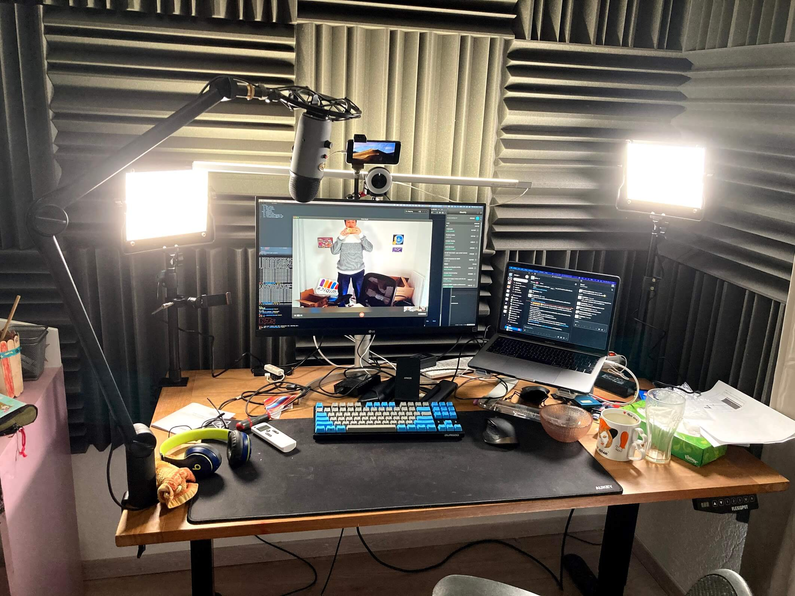
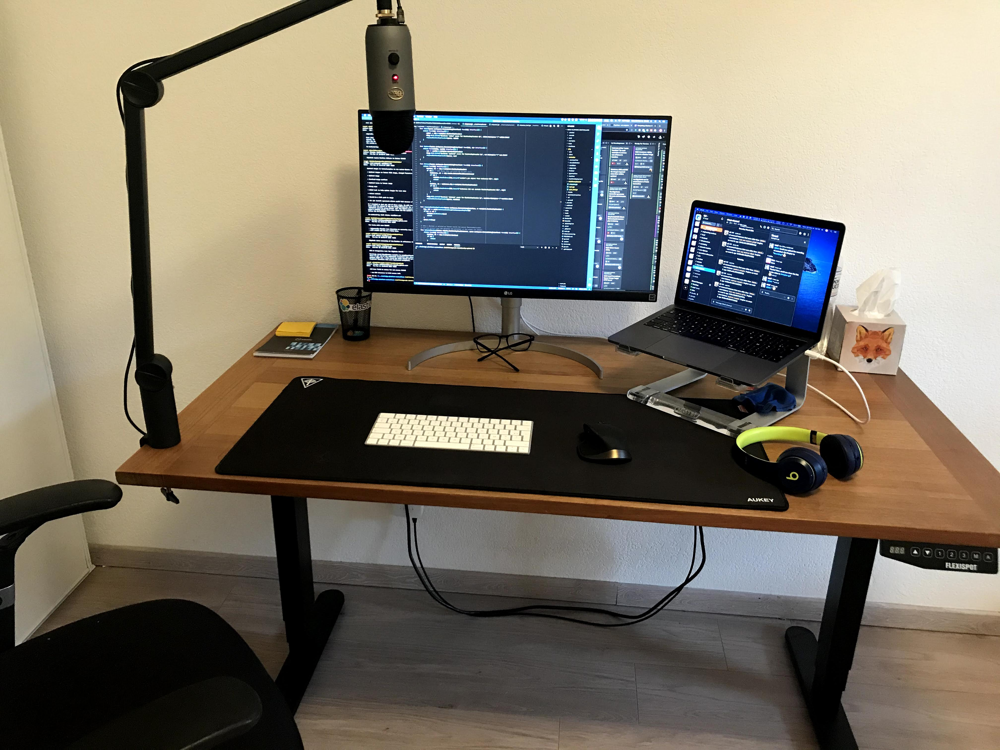
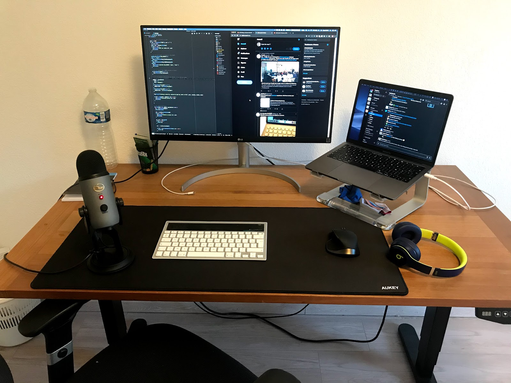
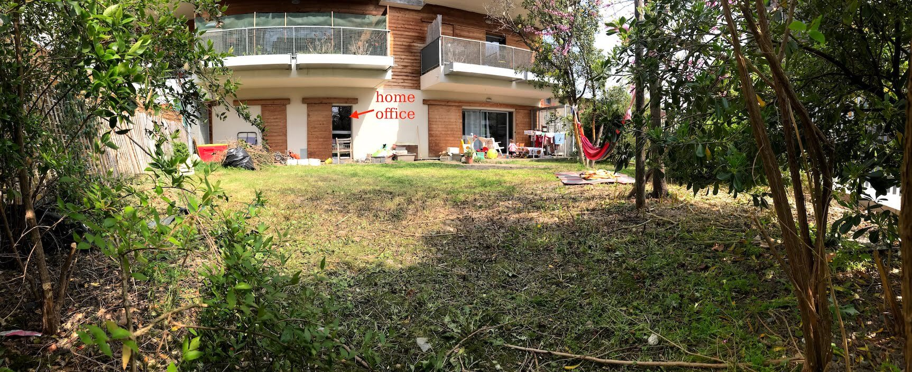

In this post, I document the changes to my office setup through time.
2021 Update

- I switched from the Apple Magic AZERTY keyboard to a QWERTY mechanical keyboard: the Durgod Taurus K320 TKL. I chose the Cherry MX Brown switches, and I love them. It feels so much better to be typing on this keyboard. Moving from AZERTY to QWERTY was the hardest part. It took about 3 months to get as confortable as I was using the AZERTY layout. I really wanted to stop working on a “second class” keyboard layout that has poor shortcut support on most apps. The other adjustment I had to do was to go to the macOS settings and swap the Windows key with the Alt key so that the ⌘ and ⌥ keys are at in the right order.
- Two UTEBIT articulating arms that hold (1) an old iPhone 7 that I use as a secondary screen using Duet and (2) a Razer Kiyo camera.
- A Razer Kiyo camera (USB 3). I wish I had a proper DSLR camera though: the Kiyo needs a ton of light to have a good image quality.
- Two UTEBIT tabletop arms that I use to hold the flood lights.
- Two NEEWER bi-color 660 flood lights.
- A set of UTEBIT 1/4 to 3/8 screw adapters.
- 24 panels of the t.akustik WAS-7 Absorber. It greatly reduced the amount of echo/reberb in the room, and allows me to put the microphone a bit further away without losing on sound quality.
2020 Update

- Yeti Compass boom arm
Note that the boom arm is meant to carry the shock mount + the mic and since I only mounted the Yeti mic, the spring mechanism is a bit too tight which means the arm tends to go up. I unscrewed the screw in the base of the boom arm at its minimum but the tension is still too high and the boom arm tends to go up.
- Apple Magic Keyboard. I also use a Sharkoon PureWriter TKL from time to time when I want to bother my collegues with the clank-clank sound of the red switches
- USB-C hub Ugreen and AUKEY USB3 hub.
2019 Office

- LG 27UL850-W 27 inches 4K monitor
- Griffin Elevator stand
- The Flexispot standing desk E5B (B = black) with a €25 wood board I mounted on top.
- I use the Beats Solo 3 headphones. I only use it for audio output. I never use the mic in Bluetooth mode since it greatly degrades my colleague’s listening experience.
- Blue Yeti USB microphone
Why a standalone mic just for Zoom? One very important aspect of the remote-only work setup is the importance of being properly understood. I take this very seriously and think that the sound quality of the mic I use every day influences how effective my meetings are. I also make a number of calls to potential candidates, which means I should sound perfect.
- Logitech K760 (wireless solar keyboard).
- Logitech MX Master Just an excellent mouse
- AUKEY mousepad XXL.
- Some random chair (I wish I could afford the Herman Miller Aeron)
And finally, here is a picture from the backyard. 🙂
